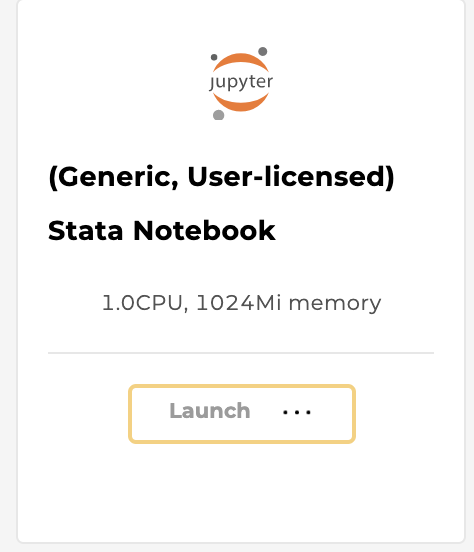
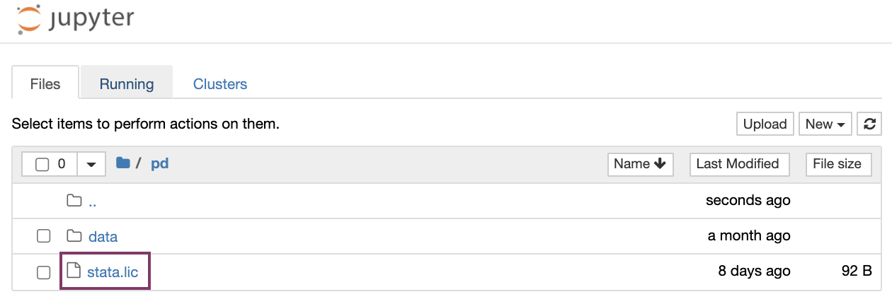

e) Workspaces###
HEAL Platform workspaces are secure data analysis environments in the cloud that can access data from one or more data resources. By default, Workspaces include Jupyter notebooks, Python and RStudio, but can be configured to host virtually any application, including analysis workflows, data processing pipelines, or data visualization apps.
New to Jupyter? Learn more about the popular tool for data scientists on Jupyter.org (disclaimer: CTDS is not responsible for the content).
Guideline to get started###
-
Users need to log in via healdata.org/login to access workspaces.
-
After navigating to healdata.org/workspace, users will discover a list of pre-configured virtual machine (VM) images, as shown below.

Available workspaces on the HEAL Platform (top). Users may need to link their accounts from other repositories (bottom; click here to see how).
-
(Generic) Jupyter Notebook with R kernel: Choose this VM if you are familiar with setting up Python- or R-based Notebooks, or if you just exported one or multiple studies from the Discovery Page and want to start your custom analysis.
- (Generic, User-licensed) Stata Notebook: Choose this VM if you are familiar with STATA-based data analysis. This notebook requires a STATA license.
-
Tutorial Notebooks: Explore our Jupyter Notebook tutorials written in Python or RStudio, which pull data from various sources of the HEAL Data Ecosystem to leverage statistical programs and data analysis tools.
All interactive tutorial notebooks can be also found as static version on the Notebook Browser tab; read more in the section "Example Analysis".
Feel free to edit and experiment with this collection of notebooks. They are your personal copies!
- Notebooks in Python: (1) BACPAC Synthetic Data Analysis, (2) JCOIN Tracking Opioid Stigma, (3) Opioid Overdose Trajectories, (4) Opioid Prevalence And Overdoses
- Notebooks in RStudio: (1) Opioid Environment Toolkit and OEPS
-
Click “Launch” on any of the above workspace flavors to spin up a copy of that VM. Note: Launching the VM may take several minutes.

The status of launching the workspace is displayed after clicking on “Launch”.
-
After launching, the home folders are displayed, one of which is the user's persistent drive ("pd").

The /pd directory is a user’s persistent drive.
-
Select the /pd folder. Only files saved in the /pd directory will remain available after termination of a workspace session.
New files or licenses should be saved in the the /pd directory if users need to access them after restarting the workspaces.
- Attention: Any personal files in the folder “data” will be lost. Personal files in the directory /pd will persist.
- Do not save files in the "data" and “data/healdata.org” folders.
- The folder “healdata.org” in the “data” folder will host the data files you have exported from the Discovery Page.
-
Start a new notebook by clicking “New” in the top right corner and choose between Python 3 or R Studio as the base programmatic language.

Start a new notebook under “New”.
-
Experiment away! Code blocks are entered in cells, which can be executed individually or all at once. Code documentation and comments can also be entered in cells, and the cell type can be set to support Markdown.
Results, including plots, tables, and graphics, can be generated in the workspace and downloaded as files.
Users can import data files directly into the Notebook code after selecting files from the "Discovery Page". An example is shown below.
-
Do not forget to terminate your workspace once your work is finished to be mindful of the cost-intensive computational effort. Note, that Workspaces automatically shut down after 90 minutes of idle time.

Do not forget to terminate your workspace once your work is finished. Unterminated workspaces continue to accrue computational costs.
Further reading: read more about how to download data files into the Workspaces here.
Upload, save, and download Files/Notebooks###
Users can upload data files or Notebooks from the local machine to the home directory by clicking on “Upload” and access them in the Notebook (see below).
Upload data files or Notebooks to the workspace by clicking on “Upload” in the top right corner. On the upload screen, find your text file (in this example it is "this_is_a_demo.txt") to upload from your local computer.
Then run in the cells, for example:
import os import pandas as pd os.chdir('/data') demo_df = pd.read_csv('/this_is_a_demo.txt', sep='\t') demo_df.head()
Users can save the notebook by clicking "File" - "Save as", as shown below.

Save the notebook under “File” - "Save as".
Users can download notebooks by clicking "File" - "Download as", as shown below.
Download the notebook as ".ipynb".
Environments, Languages, and Tools###
The following environments are available in the workspaces:
- Jupyter

- RStudio

The following programmatic languages are available in Jupyter Notebooks:
The following tools are available in Jupyter Notebooks:
- GitHub (read GitHub documentation)
Python 3 and RStudio in Jupyter###
Both Python 3 and RStudio are available in Jupyter Notebooks.
Users can expect to be able to use typical Python or RStudio packages, such as PyPI or CRAN. For Python and RStudio, users can start a new notebook under "New", as shown below.
Find Python 3 or RStudio when starting a new notebook under “New”.
STATA in Jupyter###
STATA is available as language in Jupyter notebooks (either in Python or R kernels), but requires a license and a specific workspace.
Users need to first choose the following workspace "(Generic, User-licensed) Stata Notebook" in order to be able to use STATA:

Select this workspace to use STATA in the notebook.
Users need to upload a license stata.lic to the /pd folder by selecting "Upload" (top right).

If the upload was successful, the license appears in the directory /pd.
Note, that uploading the license can also be achieved programmatically by opening a new terminal window under "New" - "Terminal", finding the directory /pd by typing: cd pd . Then, create a file using vim: vim stata.lic . This will open the file in the terminal. Users can copy the license, then hit : + wq.
Then, users need to start a new notebook under "New" (choose either R or Python). Run the following code in the first cell:
import stata_setup stata_setup.config("/usr/local/stata17", "mp")
This will return the following:

Setup the license in the first cell.
Users can then begin using the notebook by typing in known STATA commands, for example %% stata . describe .
Troubleshooting###
- If the kernel died, make sure to be logged in on 1) the Login Page 2) have enabled access to the FAIR enabled repository
Automatic Workspace Shutdown###
Workspaces automatically shut down after 90 minutes of idle time and a pop-up window will remind users before the workspace shuts down.
A pop-up window will remind users to navigate back to the workspaces page in order to save the data.
After the workspace has been shut down, users will be notified with the following pop-up window.

Workspaces automatically shut down after 90 minutes of idle time.